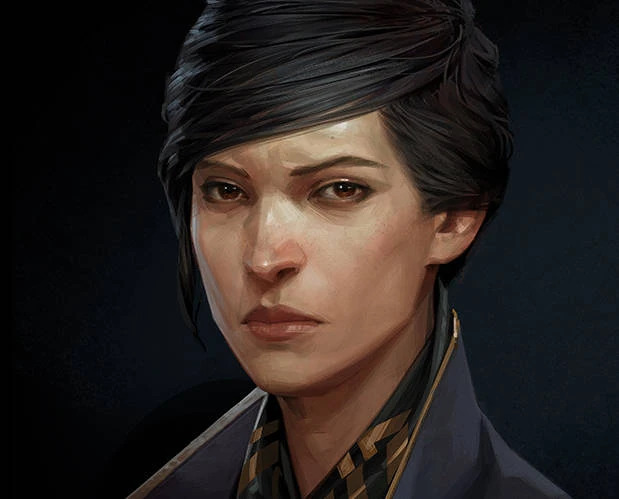
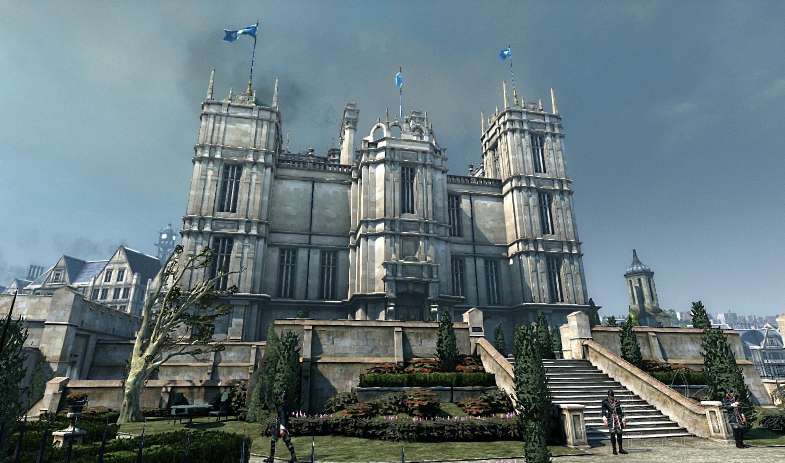
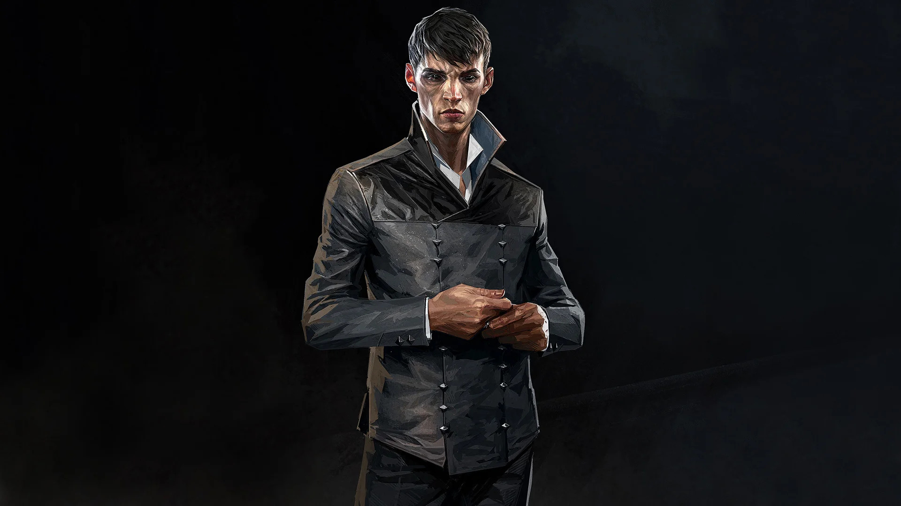
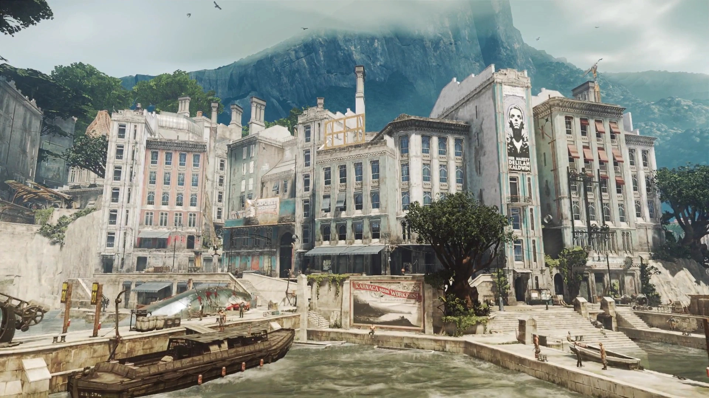
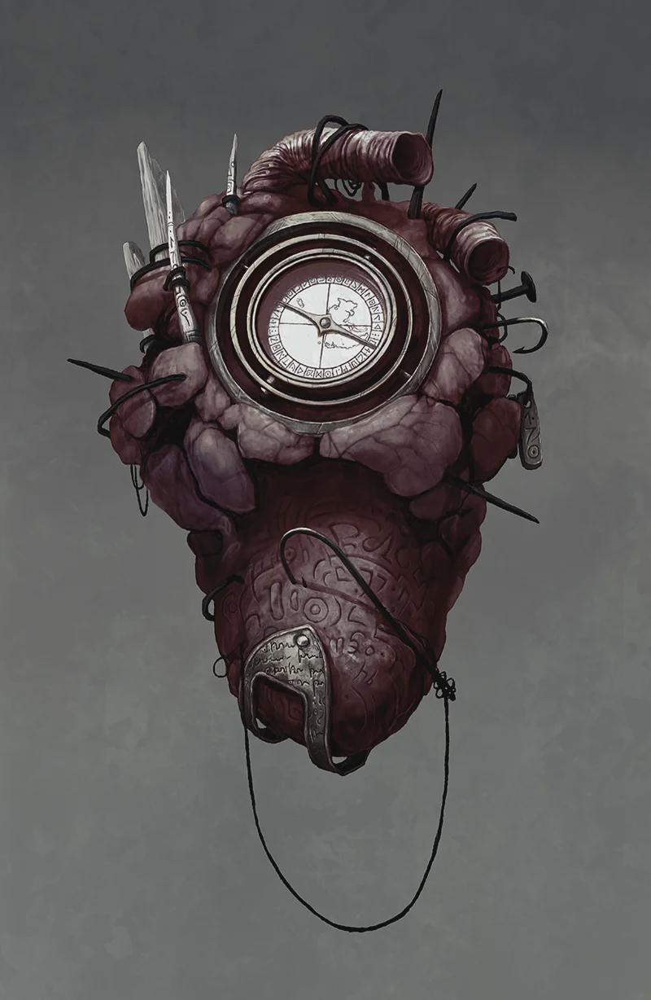

Visions of the Empire
Ten images from the Empire of the Isles. For the characters: Emily Kaldwin and her hard stare, Billie Lurk in her red coat, the witch Delilah, and the Outsider in his black jacket, standing in the dark. For the places: Dunwall Tower and its gardens under a blue sky, then the white buildings of the Karnaca docks at the foot of the mountain. You will also find Corvo's mask, seen from the front and the side, one of Jindosh's clockwork soldiers, all gears, the Heart, made of flesh and metal, and the rocks floating in the mist of the Void. Hover over an image to bring it forward.







